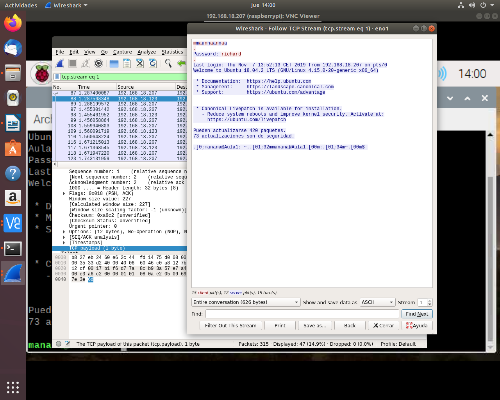

SSH
Ejercicio 1
1.Busca información en Internet de como montar un servidor telnet, bien en
Windows o bien en GNU/Linux.
2.Una vez instalado lanza el sniffer wireshark y atrapa una conexion telnet.
Indica que puertos utiliza tanto el servidor como el cliente, asi como los
protocolos usados en las distintas capas.
3.Indica los datos mas relevantes de cada capa.
4.Calcula el tamaño de cada capa, separando el payload de la cabecera.

5.Comprueba que login y contraseña viajan en texto plano.
6.Crea en el equipo remoto un directorio, un archivo de texto y
posteriormente borralos.
Ejercicio 2
1.Instala un servidor SSH en tu sistema GNU/Linux y comprueba que el puerto
22 esta en escucha.
2.Crea dos usuarios denominados usuario1 y usuario2, que vas a usarlos en el
ejercicio.
3.Comprueba que puedes acceder mediante sshd esos usuarios.
4.Cambia el puerto del servidor e intenta a acceder de nuevo.
5.Cambia la configuración del servidor para que puedas acceder al sistema
con usuario1 y NO con usuario2.
6.Cambia la configuración del servidor para que solo pueda acceder desde una
IP determinada.
7.Captura con wireshark una conexión ssh, comprueba que login y contraseña
van encriptada. Analiza cada una de las capas TCP/IP implicadas indicando los
datos mas relevantes,además del tamaño de cada capa, separando datos y cabecera.